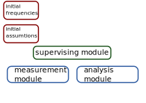
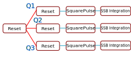

Automatic Calibration of a QPU
Overview

From schedules to measurements
- The Quantify-Scheduler allows easy to compose schedules to be compiled to FPGA instructions.
Quantify Core (QCodes-style)
# Configure the gettable
gettable = ScheduleGettable(
quantum_device=single_qubit_device,
schedule_function=t1_sched,
schedule_kwargs={"times": time},
batched=True
)
# Configure MeasurementControl
measurement_control.settables(time)
measurement_control.setpoints(times)
measurement_control.gettables(gettable)
measurement_control.run()Quantify Scheduler
def qubit_spectroscopy_schedule():
schedule = Schedule('qubit_spectroscopy', repetitions=1024)
for qubit_frequency in frequencies:
schedule.add(Reset('q12'))
schedule.add(
SoftSquarePulse(
duration=2e-6,
amp=6e-4,
port='q12:mw',
clock='q12.01'
)
)
ro = schedule.add(
SquarePulse(
duration=3e-6,
amp=3e-3,
port='q12:res',
clock='q12.ro'
)
)
schedule.add(
SSBIntegrationComplex(
duration=2.8e-6,
port='q12:res',
clock='q12.ro',
),
ref_op=ro,
ref_pt="start",
rel_time=200e-9
)
return scheduleQ1ASM FPGA instructions
move 1,R0
nop
loop: set_mrk R0
upd_param 1000
asl R0,1,R0
nop
jlt R0,16,@loop
set_mrk 0
upd_param 4
stopCalibration as a Directed Acyclic Graph

Demo 1: the calibration path!
- From resonator spectroscopy to CZ chevron
Parallelized operations
A redundant Reset operation serves as anchor for each qubit sequence

Demo 2: the characterization path!
Faster Calibration?
Two are the major contributoors to the execution time
- Number of averages ~1000
- Reset time. For example in a Rabi measurement ~99% is spent on reseting